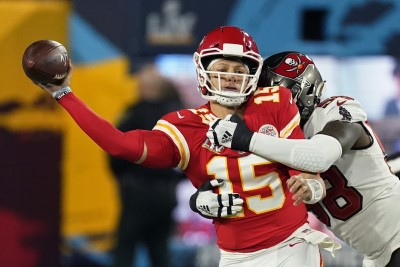
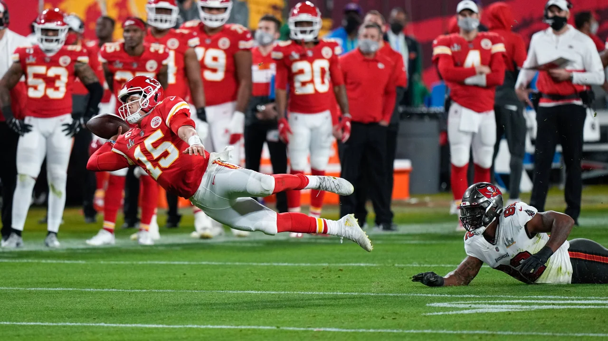
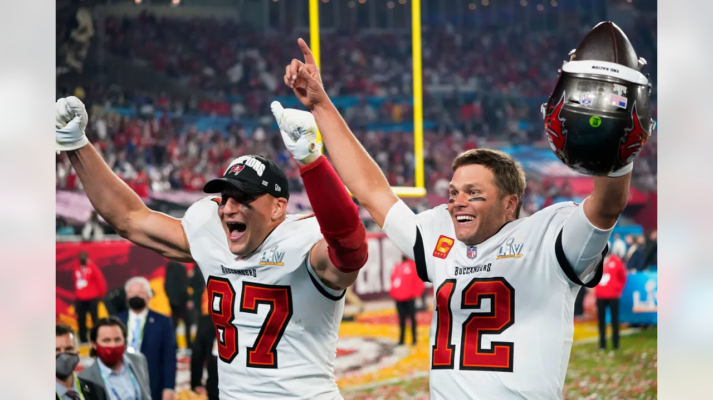

A Super Bowl LV egy amerikai futballmérkőzés volt, amelyet a National Football League (NFL) 2020-as
szezonjának bajnokságáért játszottak. A National Football Conference (NFC) bajnoka, a Tampa Bay
Buccaneers 31-9-re legyőzte az American Football Conference (AFC) bajnokát, a Kansas City Chiefst. A
mérkőzést 2021. február 7-én játszották a floridai Tampában, a Raymond James Stadionban, a Buccaneers
hazai stadionjában, és ez volt az első alkalom, hogy egy csapat a saját stadionjában játszott Super
Bowlt. 2021-ben a stadion befogadóképességét 25 000 nézőre korlátozó COVID-19 protokollok miatt ez volt
a legkevésbé látogatott Super Bowl.
A mérkőzés rövid összefoglalója
Patrick Mahomes irányító irányítása alatt a Chiefs először nem szerzett touchdownt, és kétszámjegyű
vereséget szenvedett, ezzel ők lettek a harmadik Super Bowl-csapat, amely nem szerzett touchdownt.
Emellett 11 büntetést követtek el 120 yardért, köztük az első félidőben rekordot jelentő nyolc büntetést
95 yardért, amelyek többsége a védelem ellen szólt. A Buccaneers kihasználta ezeket a hibákat, és a
félidőben 21-6-ra vezetett, majd a mérkőzés hátralévő részében dominált. Brady, aki egyben 10-re növelte
a Super Bowl szereplés és 7 győzelem játékosrekordját, rekordot jelentő ötödik alkalommal lett a Super
Bowl MVP-je, és ő volt az első, aki több franchise-nál is megkapta a díjat. 43 évesen ő lett a
legidősebb játékos, aki megkapta ezt a kitüntetést és kezdő irányítóként megnyerte a Super Bowlt,
további személyes rekordokat döntve meg, míg Bruce Arians volt a legidősebb vezetőedző, aki 68 évesen
Super Bowlt nyert, egyben ez volt az utolsó Super Bowl, amelyen Brady szerepelt, aki a következő szezon
után visszavonult.
Patrick Mahomes(15)-t passzolás közben ütik meg
Mérkőzés Összegzése
Első félidő
A Kansas City nyerte az érmefeldobást, és a második félidőre halasztotta a labdabirtoklást. A Chiefs
rúgójának, Harrison Butkernek a nyitó rúgását a Tampa Bay 24 yardos vonaláig küldték vissza. A
Buccaneers nyitó drive-ja egy három- és egy out-ba torkollott, és az ebből következő Bradley Pinion
puntot a Kansas City 33 yardos vonalán dobták le. A Chiefs első drive-ja hasonlóan végződött, a támadók
csak egy first downt tudtak elérni, Tommy Townsend puntja pedig touchbacket eredményezett. A Tampa Bay
második drive-ja Ronald Jones II ígéretes 13 yardos futásával kezdődött, de onnan elakadt, és Pinion
újabb puntjához vezetett, amelyet a Chiefs 38 yardos vonalán dobtak le. A Kansas City ezt követő
drive-ja nyolc játékban 31 yardot tett meg, és a meccs első pontjaiban csúcsosodott ki: Butker 49 yardos
mezőnygóljával. A következő drive-ban a Buccaneers futója, Leonard Fournette négyszer futott 26 yardot
egy nyolcjátékos, 70 yardos drive-ban, amely Tom Brady nyolc yardos touchdown-passzával végződött Rob
Gronkowski felé, így a Tampa Bay négypontos előnyre tett szert. Ez volt Brady 13. touchdown-passza a
szezon után Gronkowskinak, amivel új rekordot állított fel, amit korábban Joe Montanával és Jerry
Rice-szal osztoztak meg. Ez volt az első alkalom is Brady 10 Super Bowlja során, hogy az első negyedben
dobott touchdown-passzt. A Chiefs következő drive-ja, amely a saját 37 yardos vonalukról indult,
három-és-kieséssel végződött, a Buccaneers pedig a puntot követően a saját 30 yardos vonalukon vette át
a vezetést. A Chiefs a saját 30 yardos vonalán állt fel.
A második negyed első drive-jában Brady 31 yardos befejezésével Mike Evansnek a Tampa Bay a Chiefs hat
yardos vonalánál kapott egy first and goalt. A Bucs azonban a következő három játékával csak a Chiefs
egy yardos vonaláig tudott eljutni, és Ronald Jones II-t megállították a gólvonal előtt egy negyedik
futási kísérletnél (ezt a döntést a Tampa Bay megtámadta, de helybenhagyták), így a labda a Kansas Cityé
lett. A Chiefs nem tudta kihasználni a megállást. A Chiefs Tommy Townsend puntolt mélyen a Tampa Bay
területére, de a Kansas Cityt egy tartásért megint lestoppolták, így ismét puntolni kellett. Townsend
következő puntja a Chiefs 38 yardos vonalán kívülre került, így csak 29 yardot tudott elérni. A
következő drive-ban Brady 17 yardos touchdown-passzt adott Gronkowskinak, ezzel 14-3-ra növelte a
Buccaneers előnyét. A Buccaneers drive-ját két jelentős büntetés segítette - először a Chiefs Tyrann
Mathieu interceptionjét érvénytelenítette egy defensive holding call. Később, miután a Kansas City
megállította a Buccaneers-t a harmadik kísérletnél, a Chiefs játékosát, Mecole Hardmant az ezt követő
mezőnygólkísérletnél szabálytalanságért kiállították, így a Buccaneers az öt yardos büntetés
következtében egy first downt kapott. 134. A Kansas City válaszul 10 játékban 61 yardot tett meg a
labdával, Patrick Mahomes három passzt adott Travis Kelce-nek 36 yardért és 11 yardot futott. Butker egy
újabb mezőnygóllal fejezte be a labdabirtoklást, ezúttal 34 yardról, így az állás 14-6 lett. A Tampa Bay
utolsó első félidei drive-ja a saját 29 yardos vonaláról indult, alig több mint egy perccel az órán, és
egy ötjátékos, 71 yardos drive-val 21-6-ra növelte előnyét, a leghosszabbat Fournette 15 yardos
elkapásával. Brady ezt egy egy yardos touchdown-passzal fejezte be Antonio Brownnak hat másodperccel a
vége előtt. A Tampa Bayt ismét büntetések segítették - különösen egy 34 yardos passzinterferencia az
Evans-t fedező Bashaud Breeland ellen, és egy nyolc yardos passzinterferencia Mathieu ellen az end
zone-ban. Összességében az első félidőben a Chiefs nyolcszor kapott büntetést 95 yardért - ez a legtöbb
büntetés, amit egy félidőben bármelyik csapat ellen kiszabtak az NFL 2020-21-es szezonjának bármelyik
mérkőzésén, míg a Buccaneers egy öt yardos büntetést kapott. 135 A félidőben a Buccaneers 21-6-ra
vezetett a Chiefs ellen.

Patrick Mahomes(15) hihetetlen dobása, miközben úszik a levegőben
Második félidő
A második félidő Pinion kickoffjával kezdődött, amelyet a Chiefs saját 19 yardos vonalára küldtek
vissza. A következő játékban Clyde Edwards-Helaire 26 yardot futott. Edwards-Helaire egy 10 yardos
futást is végrehajtott a drive-ban, amely hét játékban 47 yardot tett meg, és egy 52 yardos mezőnygóllal
zárult, amely Butker harmadik mezőnygólja volt a mérkőzésen, 21-9-re alakítva az eredményt. A Tampa Bay
egy hatjátékos, 74 yardos drive-val vágott vissza, amelyben Brady 25 yardot tett meg Gronkowskinak. A
következő játékban Fournette 27 yardos touchdown-jával 28-9-re növelte a Bucs előnyét. Egy touchback
után a Kansas City a saját 25 yardos vonalán kezdte meg a drive-ot, de Antoine Winfield Jr.
interceptionje a Chiefs 45 yardos vonalán visszaadta a Tampa Baynek a labdát. Annak ellenére, hogy a
Buccaneers a következő nyolc játékban csak tizenegy yardot tudott szerezni, a fordítást ki tudták
használni, mivel Succop egy 52 yardos mezőnygóllal zárta a drive-ot, 31-9-re növelve az előnyüket. A
következő drive-ban a Tampa Bay 13:43 perccel a mérkőzés vége előtt a saját 11 yardos vonalánál
kényszerített ki egy downs turnover-t. A Tampa Bay egy futójátékot egy yardos győzelemre tömött, majd
Mahomes-t három egymást követő inkompletion dobásra kényszerítette.
A Chiefs védelme mindössze harmadszor kényszerítette puntolásra a Tampa Bayt, így a támadóik a saját
nyolc yardos vonaluknál vehették át a labdát. Átvitték a labdát a középpályán, de a Bucs 27 yardos
vonalánál a Tampa Bay Downsnál átadta a labdát. A Buccaneers ezután három-and-outot produkált, majd a
Kansas City 42 yardos vonalára puntolták a labdát. A Kansas City a Buccaneers 10 yardos vonaláig vitte a
labdát, de Mahomes 1:33 perccel a vége előtt interceptiont dobott Devin White-nak, amit a végzónában
touchbackért lehoztak. Brady ezután háromszor térdelt le a Tampa Baynek, lefutotta az órát, és 31-9-es
végeredményt ért el. 31-9. Brady, aki 29 passzból 21-et teljesített 201 yardért és három touchdownt
szerzett, pályafutása során ötödször nyerte el a Super Bowl legértékesebb játékosának járó díjat, ezzel
megdöntötte korábbi négyszeres rekordját.
Fournette volt a meccs vezető futója 16 futással 89 yardot és egy touchdownt szerzett, miközben négy
passzt is elkapott 46 yardért. Gronkowski, aki a Tampa Bay előző három poszt-szezonbeli meccsén
mindössze két passzt fogott, hat elkapással 67 yardot és két touchdownt ért el, a csapat vezető elkapója
volt. White nyolc szóló tackle-t (kettőt veszteségért), négy asszisztált tackle-t és egy interceptiont
jegyzett. Mahomes 26-49-ből 270 yardot és két interceptiont szerzett, miközben 33 yardot futott. Kelce
10 passzt fogott 133 yardért, ezzel új Super Bowl-rekordot állított fel a tight end által elkapott
elkapott yardok számában. A 110 Super Bowl-csapat közül a Kansas City csak a harmadik lett, amely
touchdown nélkül fejezte be a mérkőzést, csatlakozva a Super Bowl VI-ban a Miami Dolphinshoz és a Super
Bowl LIII-ban a Los Angeles Ramshez. Bruce Arians, a Buccaneers edzője lett a legidősebb edző, aki Super
Bowl-győzelmet aratott, 68 évesen és 127 naposan, míg a csapat lett az első, amelyik négy mérkőzésen
legalább 30 pontot szerzett ugyanabban az előszezonban.

Rob Gronkowski(balra) és Tom Brady ünnepli az újabb Super Bowl győzelmüket